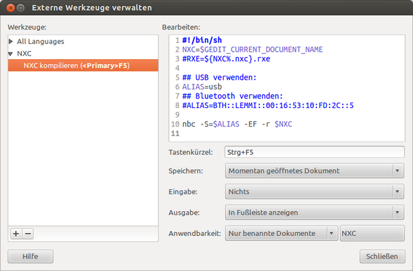

Mindstorms
Dieser Artikel wurde für die folgenden Ubuntu-Versionen getestet:
Dieser Artikel ist mit keiner aktuell unterstützten Ubuntu-Version getestet! Bitte diesen Artikel testen und das getestet-Tag entsprechend anpassen.
Zum Verständnis dieses Artikels sind folgende Seiten hilfreich:
Dieser Artikel beschreibt die Einrichtung einer Programmierumgebung für Lego Mindstorms NXT. Der Artikel fasst verschiedene englisch- und deutschsprachige Quellen zusammen und ergänzt einige Informationen, vor allem was die Integration in den Editor gedit betrifft. Für das programmierbare Mindstorms-Gerät werden im Artikel sowohl die Bezeichnungen "NXT" als auch "Brick" verwendet.
NeXTTool und Compiler¶
Das Bricx Command Center  (kurz BricxCC) enthält die notwendigen Programme: nbc und nexttool. nbc ist der Compiler für die C-ähnliche Programmiersprache NXC
(kurz BricxCC) enthält die notwendigen Programme: nbc und nexttool. nbc ist der Compiler für die C-ähnliche Programmiersprache NXC  . Nexttool enthält Funktionen zur Verwaltung des Bricks. Der neueste Quellcode von BricxCC kann über Subversion bezogen werden, zum Kompilieren muss Free Pascal installiert [1] werden:
. Nexttool enthält Funktionen zur Verwaltung des Bricks. Der neueste Quellcode von BricxCC kann über Subversion bezogen werden, zum Kompilieren muss Free Pascal installiert [1] werden:
subversion
fp-compiler
fp-units-rtl
fp-units-fcl
fp-units-base
libusb-dev
 mit apturl
mit apturl
Paketliste zum Kopieren:
sudo apt-get install subversion fp-compiler fp-units-rtl fp-units-fcl fp-units-base libusb-dev
sudo aptitude install subversion fp-compiler fp-units-rtl fp-units-fcl fp-units-base libusb-dev
BricxCC herunterladen und NeXTTool kompilieren [2]:
svn co https://svn.code.sf.net/p/bricxcc/code/ cd code make -f nexttool.mak make -f wavrsocvtlinux.mak
Die Warnungen kann man ignorieren. Nun ins Unterverzeichnis NXT wechseln und den Compiler nbc bauen:
cd NXT make -f nbcunix.mak
Die erstellten Programme können nun nach /usr/local/bin/ kopiert werden, auch die Manpage kommt an ihren angestammten Platz:
sudo cp nbc ../nexttool ../wavrsocvt /usr/local/bin/ sudo cp nbc.1 /usr/share/man/man1/
Programme zum NXT übertragen¶
Die Übertragung von Programmen kann sowohl über Bluetooth als auch über die USB-Schnittstelle erfolgen. Beide Möglichkeiten werden unten beschrieben.
Bluetooth¶
Der Vorteil der Bluetooth-Verbindung ist, dass kein Kabel benötigt wird. Allerdings dauert die Übertragung etwas länger, und unter Umständen zehrt Bluetooth stärker an den Batterien. Außerdem kann Bluetooth diverse Probleme machen, z. B. dass keine Verbindung zustande kommt.
Sobald der NXT eingeschaltet wurde, kann seine Bluetooth-Adresse mit
hcitool scan
herausgefunden werden. Um die Bluetooth-Verbindung nutzen zu können, muss auch ein rfcomm-Kanal eingerichtet werden. In /etc/bluetooth/rfcomm.conf wird die Zuordnung der Bluetooth-Adresse zu einem Kanal (im Beispiel /dev/rfcomm1) durchgeführt [3]:
1 2 3 4 5 6 | rfcomm1 {
bind yes;
device 00:16:53:10:FD:2C; # Bluetooth-Adresse des Bricks ("hcitool scan")
channel 1; # Kanal ist immer 1
comment "Mindstorms NXT";
}
|
Der Kanal wird mit
sudo rfcomm bind all
verbunden. Um das bei jedem Systemstart automatisch durchzuführen, sollte man den folgenden Befehl in /etc/rc.local vor der Zeile exit 0 eintragen:
1 | /usr/bin/rfcomm bind all
|
USB¶
Damit der NXT-Brick auch ohne Root-Rechte von allen Mitgliedern der Gruppe legonxt verwendet werden kann, sind die nachfolgend beschriebenen Schritte notwendig, die auf der BricxCC-Seite beschrieben sind. Demnach ist die Gruppe legonxt anzulegen und alle Benutzer, die den NXT verwenden können sollen, der Gruppe hinzuzufügen [4] [5]:
sudo addgroup legonxt sudo adduser <Username> legonxt
Eine neue udev-Regel unter /etc/udev/rules.d/45-legonxt.rules stellt sicher, dass beim Anstecken des Bricks (identifiziert über idVendor und idProduct) ein zusätzlicher symbolischer Link mit Schreibrechten für die Gruppe legonxt angelegt wird. Ihr Inhalt lautet:
1 | SUBSYSTEM=="usb", ACTION=="add", ATTR{idVendor}=="0694", ATTR{idProduct}=="0002", SYMLINK+="legonxt-%k", GROUP="legonxt", MODE="0660"
|
Ab nun wird bei jedem Anstecken ein symbolischer Link in der Form /dev/legonxt-x-y angelegt.
Damit die Aufnahme des Benutzers in der Gruppe legonxt wirksam wird, muss der Benutzer zuerst abgemeldet werden, auch von der grafischen Oberfläche. Nach einem Ab- und erneutem Anmelden kann mit dem Befehl groups kontrolliert werden, ob der User auch tatsächlich der neuen Gruppe angehört. Wenn das der Fall ist, können ab diesem Zeitpunkt die Befehle nexttool und nbc auch ohne Root-Rechte benutzt werden.
Kompilieren und Übertragen von Programmen¶
Nach Durchführung der oben beschriebenen Schritte können mit Hilfe des Befehls
nexttool -listbricks
alle verfügbaren Bricks aufgelistet werden.
Hinweis:
Bei der Verwendung von Bluetooth kann es vorkommen, dass der Befehl einige Male ausgeführt werden muss, bis eine korrekte Auflistung erfolgt. Falls Brick und Rechner noch nicht gekoppelt sind, erscheint zudem am Brick und am Rechner zuvor noch die Aufforderung zur Eingabe des PIN-Codes.
Der Output des obigen Befehls könnte für einen per USB und Bluetooth angebundenen Brick folgendermaßen aussehen, wobei die erste Zeile für die USB-Verbindung und die zweite Zeile für die Bluetooth-Verbindung steht (LEMMI ist in diesem Beispiel der Name des Bricks):
00165310FD2C=USB0::0X0694::0X0002::00165310FD2C::RAW BTH::LEMMI=BTH::LEMMI::00:16:53:10:FD:2C::5
Zum Kompilieren und Übertragen wird das Programm nbc verwendet. Folgende Befehle kompilieren das Programm und übertragen es via Bluetooth oder USB zum Brick:
via BlueTooth:
nbc -S=BTH::LEMMI::00:16:53:10:FD:2C::5 -EF -r programm.nxc
via USB:
nbc -S=USB -EF -r programm.nxc
Erklärung der Parameter:
| Parameter | Bedeutung |
| -S | Name der Bluetooth- oder USB-Verbindung (alles nach dem = im Output von nexttool -listbricks) |
| -EF | Enhanced Firmware (optional, siehe unten) |
| -r | das Programm auf den NXT laden und starten |
Die Programmierung selbst ist nicht Teil dieses Artikels. Einen guten ersten Einstieg vermittelt aber zum Beispiel das Debacher-Wiki .
Integration in gedit¶
Der GNOME-Editor gedit bietet für das Programmieren nützliche Funktionen wie Syntaxhervorhebung und ist mit Plugins erweiterbar. Im Folgenden ist beschrieben, wie man den Editor so einrichtet, dass bei Betätigen einer Tastenkombination das gerade bearbeitete NXC-Programm kompiliert und an den Brick gesendet wird.
Syntaxhervorhebung¶
Wenn man im Dateimanager auf eine NXC-Datei doppelklickt, wird diese zwar in gedit geöffnet, die Syntaxhervorhebung wird jedoch mangels einer Definition für .nxc-Dateien nicht durchgeführt. Man könnte nun für jede Datei unter "Ansicht -> Hervorhebungsmodus -> Quelltexte -> C" auswählen, auf Dauer ist es jedoch sinnvoll, eine Sprachdefinition für NXC hinzuzufügen. In gedit wird für die Syntaxhervorhebung die Bibliothek GtkSourceView verwendet.
Hierfür kopiert man die Datei nxc.lang  mit Root-Rechten [4] ins Verzeichnis /usr/share/gtksourceview-3.0/language-specs/.
mit Root-Rechten [4] ins Verzeichnis /usr/share/gtksourceview-3.0/language-specs/.
Hinweis:
Die Datei nxc.lang ist eine modifizierte c.lang, in der die Zeilen
1 2 3 | <language id="c" _name="C" version="2.0" _section="Sources"> <property name="globs">*.c</property> <context id="c" class="no-spell-check"> |
auf "nxc", "NXC" bzw. *.nxc angepasst wurden.
Aufruf des Compilers¶
Unter "Werkzeuge -> Externe Werkzeuge verwalten" werden folgende Einstellungen vorgenommen (falls dieser Menüpunkt nicht verfügbar ist, muss erst das Plugin "Externe Werkzeuge" unter "Bearbeiten -> Einstellungen", Reiter "Plugins" aktiviert werden):

Unten der Code zum Kopieren. Hier sind je nach Präferenz die ALIAS-Zeilen für USB oder Bluetooth auszukommentieren und im Fall von Bluetooth die richtige Adresse einzutragen:
1 2 3 4 5 6 7 8 9 10 | #!/bin/sh NXC=$GEDIT_CURRENT_DOCUMENT_NAME #RXE=${NXC%.nxc}.rxe ## USB verwenden: #ALIAS=usb ## Bluetooth verwenden: ALIAS=BTH::LEMMI::00:16:53:10:FD:2C::5 nbc -S=$ALIAS -EF -r $NXC |
Firmware¶
Die "enhanced firmware" beinhaltet einige Funktionen (multidimensionale Arrays, Winkelfunktionen, ...), die in der Standard-Firmware nicht implementiert sind. Auch wurden einige Bugs behoben. Diese Firmware kann von der BricxCC-Seite als lms_arm_nbcnxc.zip heruntergeladen werden.
Links¶
Lego Mindstorms
- die offizielle Lego-HomepageDownloads
- u.a. EV3-FirmwareAnalysiert: Die Lego-Roboter greifen an
- heise Security, 01/2016
Lego_Mindstorms - Wikipedia
TuxMinds - eine alternative grafische Entwicklungsumgebung
nxcEditor
- Editor für NXC (Syntax-Hervorhebung für NXC, direkte Übertragung der Programme auf den NXT)BricxCC Running On Linux
- Blogbeitrag, 06/2010Build NXC programs under Debian GNU/Linux
- Blogbeitrag, 06/2008nxt-ROS - älterer Artikel über NXT unter dem Roboterbetriebssystem ROS
- Erstellt mit Inyoka
-
 2004 – 2017 ubuntuusers.de • Einige Rechte vorbehalten
2004 – 2017 ubuntuusers.de • Einige Rechte vorbehalten
Lizenz • Kontakt • Datenschutz • Impressum • Serverstatus -
Serverhousing gespendet von